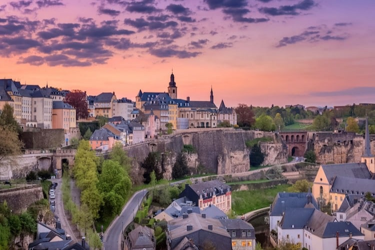

Viage até Viena e navegue até London!

Aproveite esse maravilhoso pacote, que te leva até a Austria e depois permite que você vá explorando todo o seu caminho até London na Inglaterra! Aproveite esse maravilhoso pacote, que te leva até a Austria e depois permite que você vá explorando todo o seu caminho até London na Inglaterra!
De Portugal indo até Luxemburgo!
Ande pelas terras de Portugal, lar de um dos melhores jogadores de futebol do mundo e depois visite um dos paises mais requintados da Europa, Luxemburgo, uma federação que é um pouco de tudo pelas suas divísas.
Dos pães as pizzas

Nesse pacote, você ira passear pelas ruas charmosas da França, terra da língua do amor, para então depois, ir até a Itália, local onde a culinária tem um fortíssimo renome.